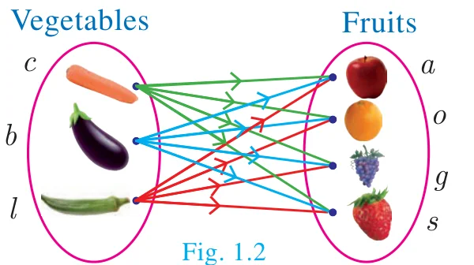
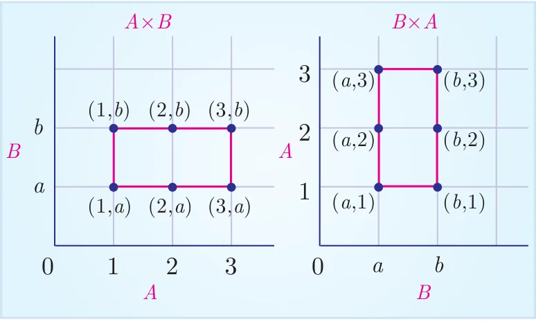
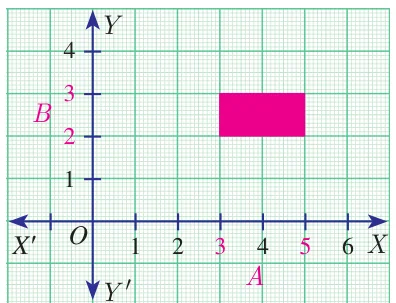
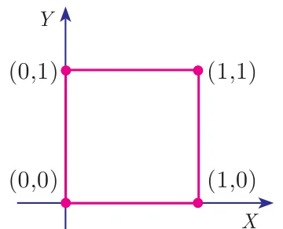
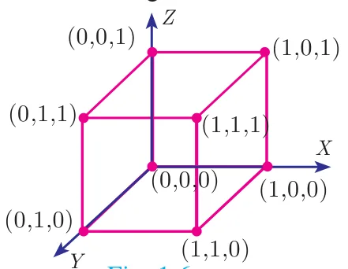

Illustration 1
Let us consider the following two sets.
\(A\) is the set of 3 vegetables and \(B\) is the set of 4 fruits. That is,
\(A = \{\text{carrot, brinjal, ladies finger}\}\) and \(B = \{\text{apple, orange, grapes, strawberry}\}\)
What are the possible ways of choosing a vegetable with a fruit? (Fig. 1.2)
| Vegetables (A) | Fruits (B) |
|---|---|
| Carrot \((c)\) | Apple \((a)\) |
| Brinjal \((b)\) | Orange \((o)\) |
| Ladies finger \((l)\) | Grapes \((g)\) |
| Strawberry \((s)\) |

We can select them in 12 distinct pairs as given below.
\((c, a), (c, o), (c, g), (c, s), (b, a), (b, o), (b, g), (b, s), (l, a), (l, o), (l, g), (l, s)\)
This collection represents the cartesian product of the set of vegetables and set of fruits.
Definition
If A and B are two non-empty sets, then the set of all ordered pairs \((a, b)\) such that \(a \in A,\ b \in B\) is called the Cartesian Product of A and B, and is denoted by \(A \times B\).
Thus, \(A \times B = \{(a, b) \mid a \in A, b \in B\}\) (read as A cross B). Also note that \(A \times \phi = \phi\)
Note
- \(A \times B\) is the set of all possible ordered pairs between the elements of \(A\) and \(B\) such that the first coordinate is an element of \(A\) and the second coordinate is an element of \(B\).
- \(B \times A\) is the set of all possible ordered pairs between the elements of \(A\) and \(B\) such that the first coordinate is an element of \(B\) and the second coordinate is an element of \(A\).
- In general \((a, b) \neq (b, a)\), in particular, if \(a = b\), then \((a, b) = (b, a)\).
- The “cartesian product” is also referred as “cross product”.
Illustration 2
Let \(A = \{1, 2, 3\}\) and \(B = \{a, b\}\). Write \(A \times B\) and \(B \times A\)?
\(A \times B = \{1,2,3\} \times \{a,b\} = \{(1,a),(1,b),(2,a),(2,b),(3,a),(3,b)\}\) (as shown in Fig. 1.3)
\(B \times A = \{a,b\} \times \{1,2,3\} = \{(a,1),(a,2),(a,3),(b,1),(b,2),(b,3)\}\) (as shown in Fig. 1.3)

Thinking Corner
When will \(A \times B\) be equal to \(B \times A\)?
Note
- In general \(A \times B \neq B \times A\), but \(n(A \times B) = n(B \times A)\)
- \(A \times B = \phi\) if and only if \(A = \phi\) or \(B = \phi\)
- If \(n(A) = p\) and \(n(B) = q\) then \(n(A \times B) = pq\)
Recall of standard infinite sets
Natural Numbers \(\mathbb{N} = \{1, 2, 3, 4, \ldots\}\); Whole Numbers \(\mathbb{W} = \{0, 1, 2, 3, \ldots\}\);
Integers \(\mathbb{Z} = \{\ldots, -2, -1, 0, 1, 2, \ldots\}\); Rational Numbers \(\mathbb{Q} = \left\{\dfrac{p}{q} \mid p, q \in \mathbb{Z}, q \neq 0\right\}\);
Real Numbers \(\mathbb{R} = \mathbb{Q} \cup \mathbb{Q}'\), where \(\mathbb{Q}'\) is the set of all irrational numbers.
Illustration 3

For example, let A be the set of numbers in the interval [3, 5] and \(B\) be the set of numbers in the interval [2,3]. Then the Cartesian product \(A \times B\) corresponds to the rectangular region shown in the Fig. 1.4. It consists of all points \((x, y)\) within the region.
Progress Check
- For any two non-empty sets \(A\) and B, \(A \times B\) is called as \(\underline{\qquad}\).
- If \(n(A \times B) = 20\) and \(n(A) = 5\) then \(n(B)\) is \(\underline{\qquad}\).
- If \(A = \{-1, 1\}\) and \(B = \{-1, 1\}\) then geometrically describe the set of points of \(A \times B\).
- If A, B are the line segments given by the intervals \((-4, 3)\) and \((-2, 3)\) respectively, represent the cartesian product of A and B.
Note
The set of all points in the cartesian plane can be viewed as the set of all ordered pairs \((x, y)\) where \(x, y\) are real numbers. In fact, \(\mathbb{R} \times \mathbb{R}\) is the set of all points which we call as the cartesian plane.
Activity 1
Let \(A = \{x \mid x \in \mathbb{N}, x \le 4\}\), \(B = \{y \mid y \in \mathbb{N}, y < 3\}\)
Represent \(A \times B\) and \(B \times A\) in a graph sheet. Can you see the difference between \(A \times B\) and \(B \times A\)?
Example 1.1
If \(A = \{1,3,5\}\) and \(B = \{2,3\}\) then (i) find \(A \times B\) and \(B \times A\). (ii) Is \(A \times B = B \times A\)? If not why? (iii) Show that \(n(A \times B) = n(B \times A) = n(A) \times n(B)\)
Solution
Given that \(A = \{1,3,5\}\) and \(B = \{2,3\}\)
\(A \times B = \{1,3,5\} \times \{2,3\} = \{(1,2), (1,3), (3,2), (3,3), (5,2), (5,3)\} \quad \ldots(1)\)
\(B \times A = \{2,3\} \times \{1,3,5\} = \{(2,1), (2,3), (2,5), (3,1), (3,3), (3,5)\} \quad \ldots(2)\)
- From (1) and (2) we conclude that \(A \times B \neq B \times A\) as \((1,2) \neq (2,1)\) and \((1,3) \neq (3,1)\), etc.
- \(n(A) = 3;\ n(B) = 2\).
From (1) and (2) we observe that, \(n(A \times B) = n(B \times A) = 6\);
we see that, \(n(A) \times n(B) = 3 \times 2 = 6\) and \(n(B) \times n(A) = 2 \times 3 = 6\)
Hence, \(n(A \times B) = n(B \times A) = n(A) \times n(B) = 6\).
Thus, \(n(A \times B) = n(B \times A) = n(A) \times n(B)\).
Example 1.2
If \(A \times B = \{(3,2), (3,4), (5,2), (5,4)\}\) then find \(A\) and \(B\).
Solution
\(A \times B = \{(3,2), (3,4), (5,2), (5,4)\}\)
We have \(A = \{\text{set of all first coordinates of elements of } A \times B\}\). \(\therefore A = \{3,5\}\)
\(B = \{\text{set of all second coordinates of elements of } A \times B\}\). \(\therefore B = \{2,4\}\)
Thus \(A = \{3,5\}\) and \(B = \{2,4\}\).
Example 1.3
Let \(A = \{x \in \mathbb{N} \mid 1 < x < 4\}\), \(B = \{x \in \mathbb{W} \mid 0 \le x < 2\}\) and \(C = \{x \in \mathbb{N} \mid x < 3\}\). Then verify that
(i) \(A \times (B \cup C) = (A \times B) \cup (A \times C)\) (ii) \(A \times (B \cap C) = (A \times B) \cap (A \times C)\)
Solution
\(A = \{x \in \mathbb{N} \mid 1 < x < 4\} = \{2, 3\}\), \(B = \{x \in \mathbb{W} \mid 0 \le x < 2\} = \{0, 1\}\), \(C = \{x \in \mathbb{N} \mid x < 3\} = \{1, 2\}\)
(i) \(A \times (B \cup C) = (A \times B) \cup (A \times C)\)
\(\begin{aligned} B \cup C &= \{0,1\} \cup \{1,2\} = \{0,1,2\} \\ A \times (B \cup C) &= \{2,3\} \times \{0,1,2\} = \{(2,0),(2,1),(2,2),(3,0),(3,1),(3,2)\} && \ldots(1) \\ A \times B &= \{2,3\} \times \{0,1\} = \{(2,0),(2,1),(3,0),(3,1)\} \\ A \times C &= \{2,3\} \times \{1,2\} = \{(2,1),(2,2),(3,1),(3,2)\} \\ (A \times B) \cup (A \times C) &= \{(2,0),(2,1),(3,0),(3,1)\} \cup \{(2,1),(2,2),(3,1),(3,2)\} \\ &= \{(2,0),(2,1),(2,2),(3,0),(3,1),(3,2)\} && \ldots(2) \end{aligned}\)
From (1) and (2), \(A \times (B \cup C) = (A \times B) \cup (A \times C)\) is verified.
(ii) \(A \times (B \cap C) = (A \times B) \cap (A \times C)\)
\(\begin{aligned} B \cap C &= \{0,1\} \cap \{1,2\} = \{1\} \\ A \times (B \cap C) &= \{2,3\} \times \{1\} = \{(2,1),(3,1)\} && \ldots(3) \\ A \times B &= \{2,3\} \times \{0,1\} = \{(2,0),(2,1),(3,0),(3,1)\} \\ A \times C &= \{2,3\} \times \{1,2\} = \{(2,1),(2,2),(3,1),(3,2)\} \\ (A \times B) \cap (A \times C) &= \{(2,0),(2,1),(3,0),(3,1)\} \cap \{(2,1),(2,2),(3,1),(3,2)\} \\ &= \{(2,1),(3,1)\} && \ldots(4) \end{aligned}\)
From (3) and (4), \(A \times (B \cap C) = (A \times B) \cap (A \times C)\) is verified.
Note
The above two verified properties are called distributive property of cartesian product over union and intersection respectively. In fact, for any three sets \(A, B, C\) we have
(i) \(A \times (B \cup C) = (A \times B) \cup (A \times C)\) (ii) \(A \times (B \cap C) = (A \times B) \cap (A \times C)\).
1.3.1 Cartesian Product of three Sets
If A, B, C are three non-empty sets then the cartesian product of three sets is the set of all possible ordered triplets given by
\(A \times B \times C = \{(a, b, c) \text{ for all } a \in A, b \in B, c \in C\}\)
Illustration for Geometrical understanding of cartesian product of two and three sets

Let \(A = \{0,1\},\ B = \{0,1\},\ C = \{0,1\}\)
\(A \times B = \{0,1\} \times \{0,1\} = \{(0,0),(0,1),(1,0),(1,1)\}\)
Representing \(A \times B\) in the \(XY\)-plane we get a picture shown in Fig. 1.5.
\(\begin{aligned}(A \times B) \times C &= \{(0,0),(0,1),(1,0),(1,1)\} \times \{0,1\} \\ &= \{(0,0,0),(0,0,1),(0,1,0),(0,1,1),(1,0,0),(1,0,1),(1,1,0),(1,1,1)\}\end{aligned}\)
Representing \(A \times B \times C\) in the \(XYZ\)-space we get a picture as shown in Fig. 1.6.

Thus, \(A \times B\) represent vertices of a square in two dimensions and \(A \times B \times C\) represent vertices of a cube in three dimensions.
Note
In general if we join the cartesian product of two non-empty sets provides a shape in two dimensions and similarly cartesian product of three non-empty sets provide an object in three dimensions.